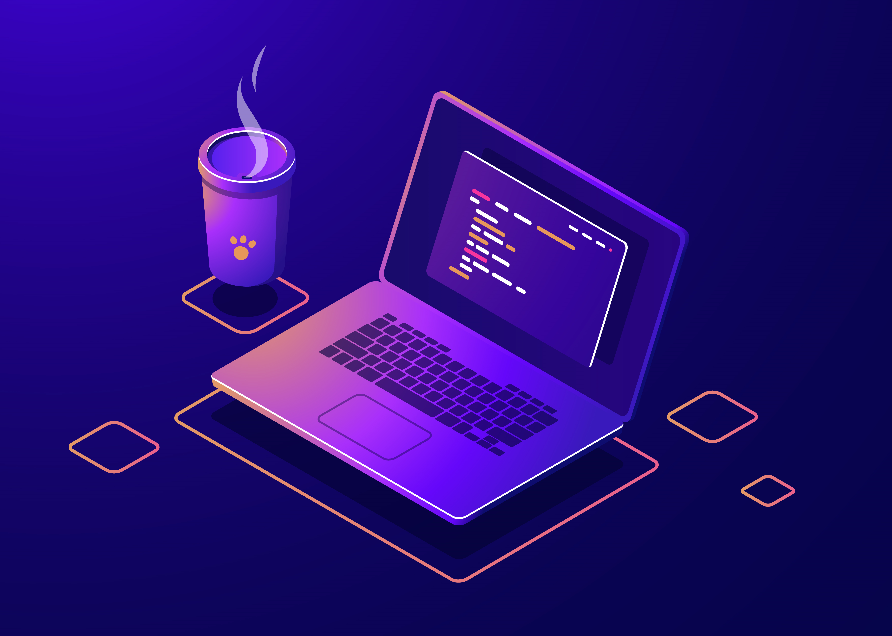

👋 Hola, soy Yanina Unrein
FullStack Developer
Me encuentro cursando segundo año de la Tecnicatura en Desarrollo Web y Aplicaciones Digitales en el Instituto Superior Politécnico de Córdoba y primer año en la Tecnicatura en Desarrollo Web en la Universidad de Entre Ríos, ambas a distancia. Soy una persona que me esmero en mejorar día a día, responsable, trabajo en equipo, comprometida y perseverante. Siempre busco como solucionar los problemas que se me presenten y adquirir todo el conocimiento de esas situaciones.

📚 Studies
I am currently studying a technical degree in Web Development and Digital Applications at the ISPC and a Technical Degree in Web Development at the University of Entre Rios.
💻 Courses
- Bootcamp JavaScript Full-Stack | Undefined Academy
- Web development JavaSript/NodeJS | Codo a Codo edition 2023
- Open Bootcamp
🚀 Technologies
- HTML
- CSS
- JavaScript
- MySQL
- SASS
- Bootstrap
- Python
- Wordpress